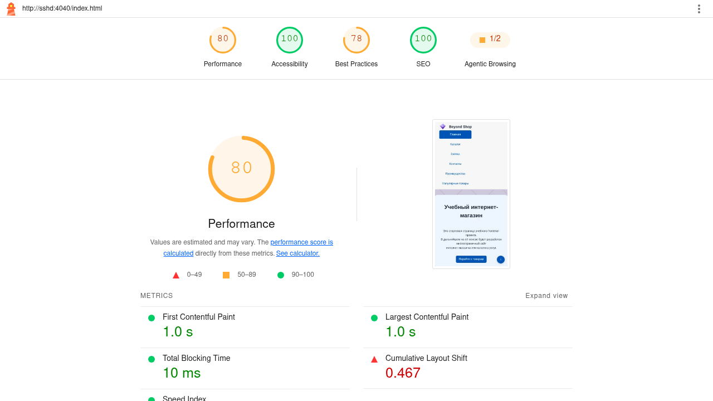

Beyond Shop — практическое занятие №13
| Страница | URL | Accessibility |
|---|---|---|
| Главная | index.html |
100 |
| Каталог | catalog.html |
100 |
| Страница товара | products/shapets.html |
100 |

id="main" на все элементы <main>--color-text: #1f2937, --color-muted: #4b5563:focus-visible с outline: 3px solidhref="#" на href="#main"aria-current="page" на активную ссылку навигацииaria-required="true" на обязательные поля форм